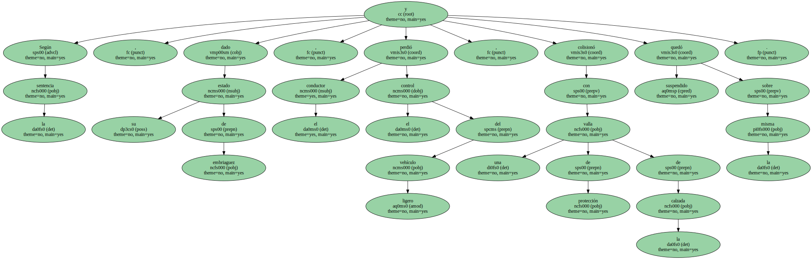
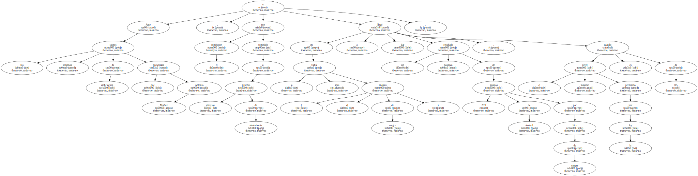
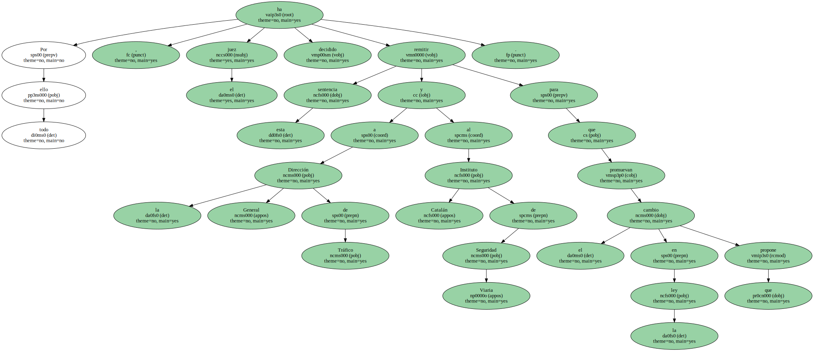

Un juez de Barcelona ha propuesto en una sentencia un cambio en la ley para exigir a los conductores de ciclomotores , que circulan con una simple licencia que conceden las autoescuelas , que se sometan a las pruebas teórico-prácticas para obtener el permiso de conducir.
El titular del juzgado de Lo Penal 3 de Barcelona , Santiago Vidal , ha dictado una sentencia en la que critica la legislación actual , que permite " la simple expedición de la licencia de ciclomotores que la Autoridad Provincial de Tráfico concede de forma indiscriminada y sin ningún control real , por vía de delegación a las autoescuelas de formación de conductores ".
El magistrado vierte esta crítica en una sentencia en la que condena al conductor de un cuadriciclo ligero ( vehículo que no puede desarrollar más de 45 km/h , de chasis ligero y con una potencia no superior a 50 centímetros cúbicos ) por accidentarse cuando iba en estado ebrio , concretamente con una tasa de alcohol en la sangre cuatro veces superior a la permitida.
El conductor , Antonio Muñoz Serrano , que ha sido condenado a una multa de 120.000 pesetas y prohibición de la licencia de circulación durante un año , sufrió el accidente la mañana del 5 de junio del pasado año cuando conducía su cuadriciclo - cuyo uso requiere solo de la licencia de circulación - , por una travesía de Sant Boi de Llobregat ( Barcelona ).

Según la sentencia , dado su estado de embriaguez , el conductor perdió el control del ligero vehículo , colisionó con una valla de protección de la calzada y quedó suspendido sobre la misma.
Ante los signos externos de embriaguez que presentaba Antonio Muñoz , el conductor fue sometido a diversas pruebas de alcoholemia y en la más fiable ( el análisis de sangre ) llegó a dar un resultado positivo de 2'70 gramos de alcohol por litro de sangre , cuando el nivel máximo permitido por la ley es de 0'5.
En su sentencia , a la que ha tenido acceso EFE , el juez critica la " falta de previsión del legislador por la inexistente exigencia de requisitos de capacitación teórica y práctica para conducir " vehículos como ciclomotores o cuadriciclos y ello " pese a ser un instrumento potencialmente peligroso para la integridad física de personas totalmente inexpertas en su correcto manejo , desconocedoras además de las normas de seguridad vial básicas ".
Santiago Vidal lamenta que " no se exija al ciudadano que pretende conducir tal clase de vehículos la superación de ninguna prueba de capacitación teórico/práctica reglada , más allá de la simple expedición de la licencia de ciclomotores ".
El juez recuerda que " según la ley " , las autoescuelas " deben proporcionar a los futuros conductores un mínimo de horas de formación teórica , pero ni se les exige simultáneamente ninguna prueba de capacitación práctica en el manejo del cuadriciclo o ciclomotor ni parece arriesgado afirmar que , a cambio del pago de la correspondiente matrícula , el control real sobre el resultado de suficiencia del examen teórico sea ilusorio ".
La sentencia subraya que " el índice estadístico anual de accidentes de tráfico causados por ciclomotores en el interior de núcleo urbano resulta aterrador , según las cifras del Instituto Catalán de Seguridad Viaria ".
" Con frecuencia , además , debemos lamentar que las lesiones sufridas por los conductores de tales vehículos - muchas veces jóvenes de 14 a 19 años - son de una extrema gravedad , pues su propio cuerpo es el único chasis protector en caso de accidente " , afirma el juez.
Pese a ello , añade la sentencia , " la Autoridad gubernativa sigue permitiendo que miles de jóvenes sin la debida formación cívica ni conocimientos básicos suficientes circulen por las calles de nuestras ciudades , cometiendo innumerables infracciones generadoras de situaciones de riesgo que cualquier ciudadano mínimamente atento puede observar a diario ".
Por todo ello , el juez ha decidido remitir esta sentencia a la Dirección General de Tráfico y al Instituto Catalán de Seguridad Viaria para que promuevan el cambio en la ley que propone.
